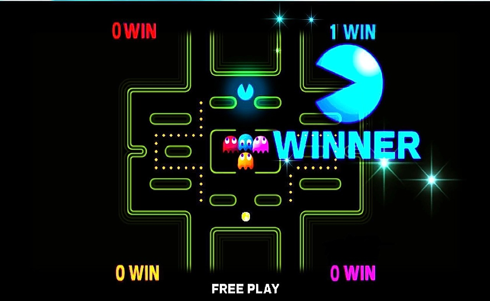
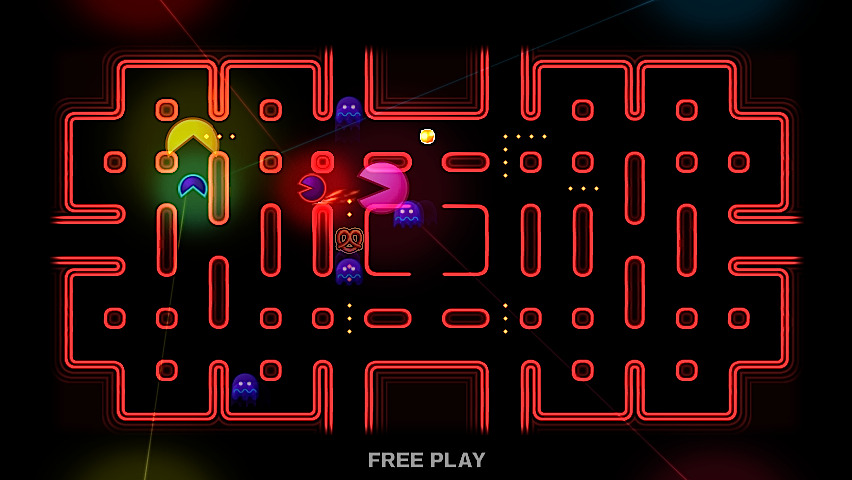
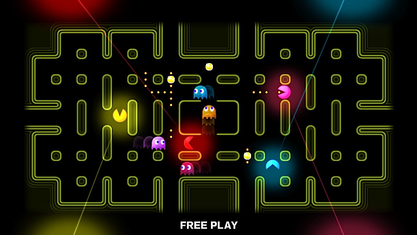
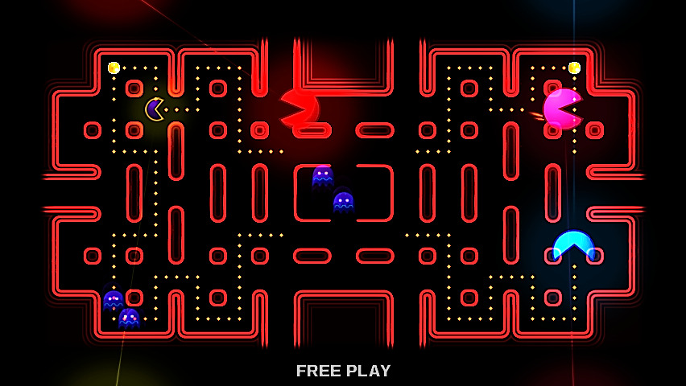
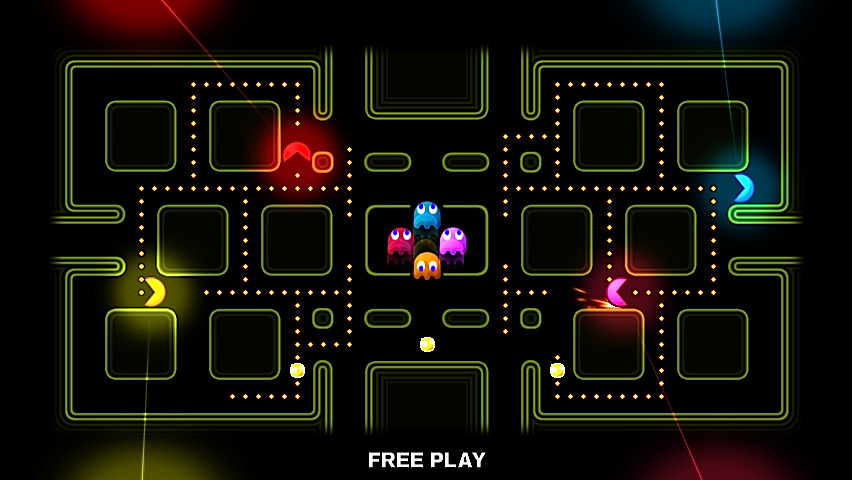
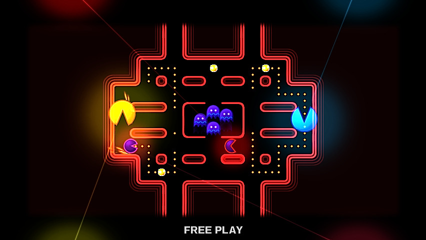

Thu, 13 Jun 2013 13:01:52 · games · pacman · videogames · E32013
tinycartridge pac man battle royale coming to






Pac-Man Battle Royale coming to 3DS eShop
…and Wii U, and PS3, Xbox, and PC, this winter! It’s part of Pac-Man Museum, a collection that includes who cares what else. If you’ve never played Battle Royale, it’s a four-player arcade game where each player controls a Pac-Man, rushing to grab power pellets and eat one another.
It’s incredible. INCREDIBLE. And it’s never been available outside of arcades. This is the best announcement of E3, no doubt.
BUY Nintendo 3DS and 3DS XL consoles, upcoming games
A trip down memory lane… Always loved Pac-Man!